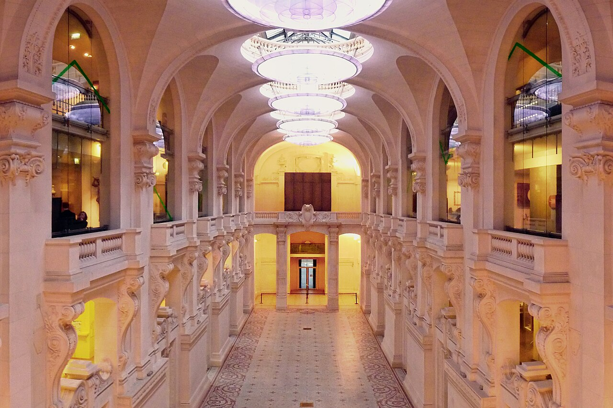

12 lieux référencés
Île-de-France
Le Louvre — pavillon de Rohan.Photo : Guilhem Vellut · Wikimedia Commons · CC BY 2.0 · Redimensionnée, sans recadrage.
Musée du Louvre
Consulter la fiche du musée →

Île-de-France
L’horloge de la façade du musée d’Orsay.Photo : Cheng-en Cheng · Wikimedia Commons · CC BY-SA 2.0 · Redimensionnée, sans recadrage.
Île-de-FranceMusée d’Orsay
Consulter la fiche du musée →

Fondation Louis Vuitton
Consulter la fiche du musée →
Île-de-France
L’entrée du musée Grévin à Paris, photographiée en 2009.Photo : Myrabella · Wikimedia Commons · CC BY-SA 3.0 · Redimensionnée, sans recadrage.
Musée Grévin
Consulter la fiche du musée →

Île-de-France
La façade du musée Cernuschi à Paris, photographiée en 2008.Photo : Daderot · Wikimedia Commons · Domaine public · Redimensionnée, sans recadrage.
Musée Cernuschi
Consulter la fiche du musée →


Île-de-France
Une salle du musée de l’Homme à Paris, photographiée en 2024.Photo : Frédéric Picard 28 · Wikimedia Commons · CC BY-SA 4.0 · Redimensionnée, sans recadrage.
Musée de l’Homme
Consulter la fiche du musée →

Île-de-France
Le jardin sur rue du musée Bourdelle à Paris, photographié en 2009.Photo : Jean-Pierre Dalbéra · Wikimedia Commons · CC BY 2.0 · Redimensionnée, sans recadrage.
Musée Bourdelle
Consulter la fiche du musée →

Île-de-FranceLe hall du musée des Arts décoratifs à Paris, photographié en 2011.Photo : Telemaque MySon · Wikimedia Commons · CC BY-SA 3.0 · Redimensionnée, sans recadrage.
Musée des Arts Décoratifs
Consulter la fiche du musée →


Île-de-France
Une cour du musée Carnavalet à Paris, photographiée en 2008.Photo : Daderot · Wikimedia Commons · CC BY-SA 4.0 · Redimensionnée, sans recadrage.
Musée Carnavalet – Histoire de Paris
Consulter la fiche du musée →

Île-de-France
La façade du Petit Palais, à Paris.Photo : KoS · Wikimedia Commons · CC BY-SA 3.0 · Redimensionnée, sans recadrage.
Petit Palais – Musée des Beaux-Arts de la Ville de Paris
Consulter la fiche du musée →

Île-de-France
Détail des sculptures et des abords du musée d’Art moderne de Paris, photographié en 2006.Photo : Maciej Zgadzaj · Wikimedia Commons · CC BY 2.0 · Redimensionnée, sans recadrage.
Musée d’Art Moderne de Paris
Consulter la fiche du musée →

Île-de-France
La façade sud du Palais Galliera et son square, photographiés en 2023.Photo : Romainbehar · Wikimedia Commons · CC0 · Redimensionnée, sans recadrage.
Palais Galliera – Musée de la Mode de Paris
Consulter la fiche du musée →